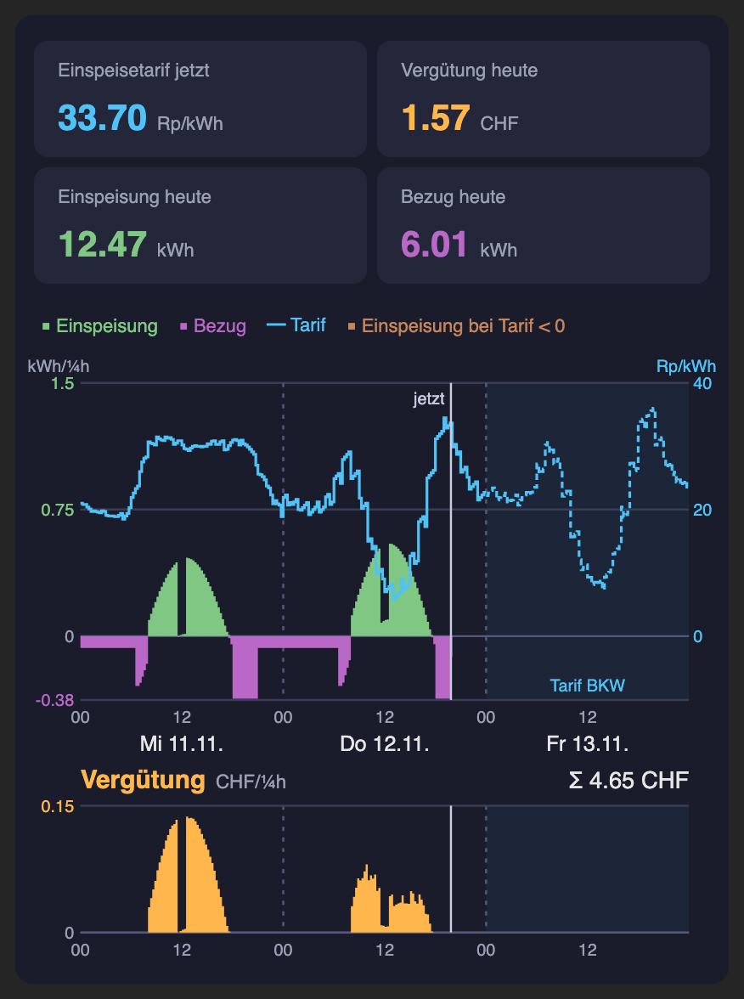

Mit KI bauen, im Emulator testen, auf den eigenen gPlug laden.
BKW-API nach dem Start und stündlich, wenn heute/morgen fehlt
→ 3 Tage × 96 Viertelstunden × int16
jede Viertelstunde Zählerstände lesen (Eo/Ei oder Namen aus /gplug.json), Differenz in Wh
→ Ausfälle sauber behandeln
Kacheln und 3-Tage-Grafik: Oberfläche gplug_ui.html ist vorgegeben, die App liefert die Daten
→ /gplug/chart.json + Daten-div
00:01 eine Zeile für gestern in /gplug_JJJJ-MM.csv
→ max. 3 Monate
UC5 Zählernamen automatisch aus /script.txt, UC6 Befehle GplugInfo, GplugPreise, GplugAbruf
→ nur wenn Zeit bleibt
spec/uc*.md: Vertrag, Regeln, Testtabelle — 45 Tests
Testcode in der Spec, eingeklappt; kein Use Case braucht einen späteren
spec/pro Use Case Vertrag, Regeln, Testtabelle und ausführbare Tests (eingeklappt) · README.md: Test-Hilfen T.*
gplug/deine App: Start mit main.be und der vorgegebenen Oberfläche gplug_ui.html
AGENTS.mdgemessene Fakten und Stolpersteine — liest jeder Agent bei jedem Schritt mit
/plan, /build in .opencode/commands/ (gleich in .claude/) — so sieht ein guter Auftrag aus
tasmota-berry: Sprache + Tasmota-API, jedes Beispiel geprüft · tasmota-lowmem-webui: Hauptseite, Heap
emulator/Tasmota-API in Berry nachgebaut, Zähler- und BKW-Simulation, Bedienfeld :8080/emu, Testrunner
build.sh · test.shechter Compiler → build/gplug.tapp, lädt in den Emulator · jeder Testblock in frischem Emulator
referenz/Musterlösung, alle Tests grün, läuft auf :8090 — für den Agenten unsichtbar
workshop/ · docker/Folien, Grundlagen, Anleitung · Images tools und agent (opencode, Claude Code)
| Hook | wann | wofür |
|---|---|---|
web_add_main_button() | 1× pro Seitenaufruf | SVG, JS — das Skelett |
web_sensor() | alle ~2 s | Momentanwerte als Daten-div |
webserver.on(…) | wann der Browser will | chart.json alle 5 min |
web_sensor() ersetzt den Bereich #l1 bei jedem Poll#l1 verschieben.tapp, nicht als String im CodeSkill: .claude/skills/tasmota-lowmem-webui
gplug/*.be · build.sh (echter Compiler) · test.sh bis grün · .tapp im EmulatorDer erste Entwurf dieses Repos:
tasmota.http_get, tasmota.timer_set, tasmota.file_read — gibt es alle nichtjson.load der 21 kBAGENTS.md: verifizierte Fakten und Stolpersteinedatei.be:zeilerm, mv, git checkout gesperrt — ein Agent hat im Test build/ gelöscht# einmalig docker compose build # auch nach jedem git pull cp .env.example .env # Windows: copy # Emulator → localhost:8080/emu docker compose up -d emulator # KI-Agent: eins von beiden docker compose run --rm opencode docker compose run --rm claude # ohne Agent docker compose run --rm tools bash test.sh
über Infomaniak, Daten bleiben in der Schweiz. Zugang in .env: INFOMANIAK_API_KEY, INFOMANIAK_PRODUCT_ID.
Login im Container. /plan im Plan-Modus (Shift+Tab), dann zurück für /build.
Gleicher Compiler wie auf dem gPlug (Tasmota 15.3.0).
Status 10, Br …, eigene Befehle (UC6)T.test("UC1-4 Ab 18 Uhr … morgen", def () var n = T.abrufe() T.bis(18, 10) T.eq(T.abrufe(), n + 1, "Abrufe") var d = T.json("/gplug/chart.json") … end)
Start immer Mi 11.11.2026 10:00, leeres Dateisystem.
Pro Use Case, der Reihe nach UC1 → UC4 (UC5, UC6 als Zusatz):
/plan ucN — und den Plan lesen (APIs? json.load? bytes()?)/build ucN — der Agent baut und testet, bis die Tests grün sind; danach läuft die App im Emulator/new für den nächsten Use Case[Assistant tool call] o.ä.)? weiter senden.bash test.sh.Fertig: === Testblöcke: 13 bestanden, 0 fehlgeschlagen ===
build/gplug.tapp (von /build)Status 10: heissen die Zähler nicht Eo/Ei → gplug.json mit key_ein, key_bez, einheithttp://<gplug>/gplug/chart.json Br tasmota.memory()
GplugInfo → Preise_heute = 96)heap_free deutlich über 50 kBreferenz/gplug/ — wer nicht fertig wird, lädt diese.

/build weiterbauenZeitumstellung sauber: Tage mit 92 bzw. 100 Viertelstunden
Tageswerte per MQTT an Home Assistant
Monatsübersicht aus der CSV, Mockups in spec/mockups/
Regel bleibt: Spec-Zeile + Test + Code — keine Spec ohne Test, kein Test ohne Code.
github.com/proBieri/glue-workshop-smart-energy · michael.bieri@glue.ch · gplug.ch